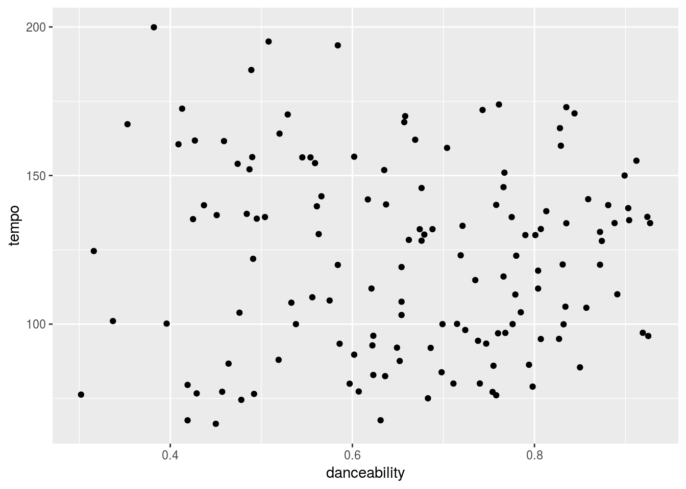
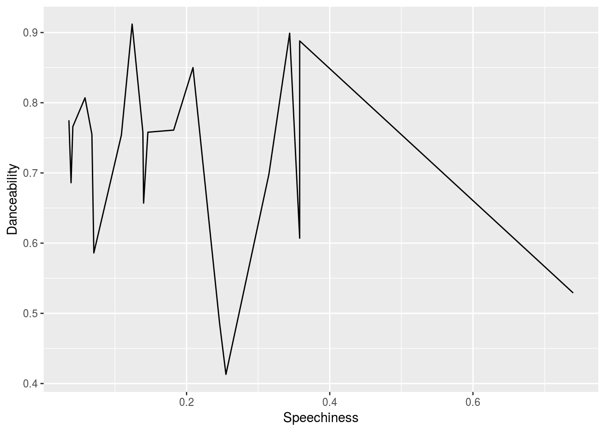
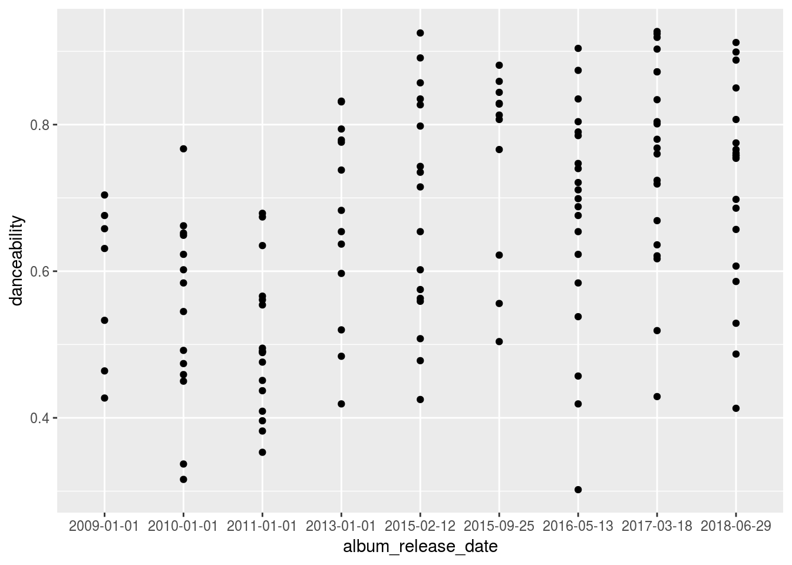
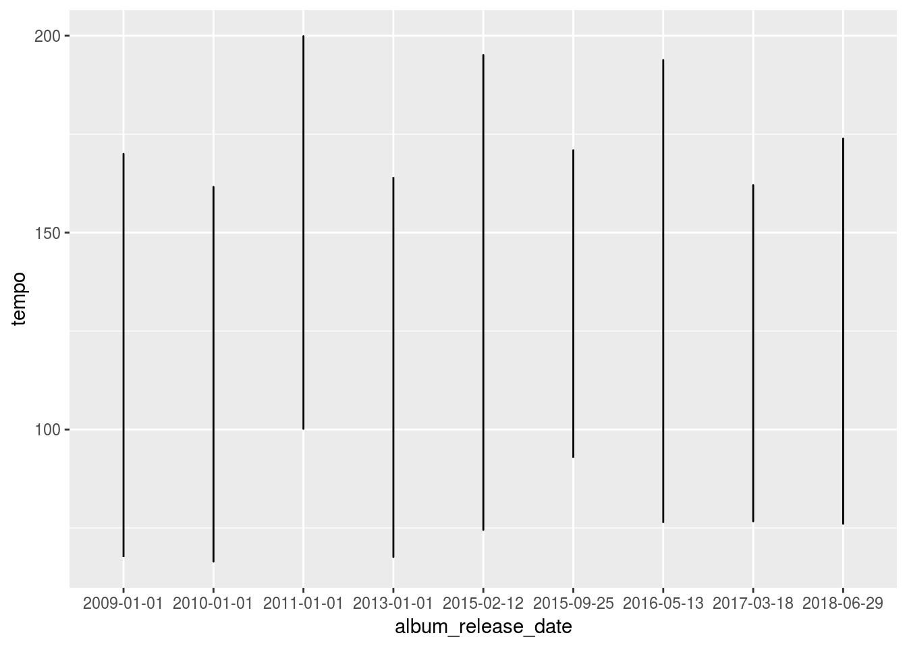

Load In Data
load("/cloud/project/content/project/tok/token.rda")
Sys.setenv(SPOTIFY_CLIENT_ID = client)
Sys.setenv(SPOTIFY_CLIENT_SECRET = secret)
access_token <- get_spotify_access_token()
# get_spotify_authorization_code()Analysis of how music tastes has changed
Notes: 1. Make sure you locally store your client id and client secret so you don’t share them with others. 2. Since you’re not pulling data from your our account but rather public data, the spotifyr package should work, i.e. we’re not going to have the problems we had before. 3. More information about the package and how to create your spotify API access here.
The following code chunk can be used to get all the songs by an artist. The output is a dataframe of songs, including song names, album names, album release date, album popularity, song popularity, danceability, energy, loudness, mode, speechiness, instrumentalness, livenss, acousticness, valence, tempo, and duration.
Data
The data collected shows all types of information , such as:
- Danceability
- Release Date Info
- Popularity
- Etc.
For Example, the information for the artist Drake is shown below and was pulled using the Spotifyr package.
## Observations: 25
## Variables: 31
## $ artist_name <chr> "Drake", "Drake", "Drake", "Drake", "Dr...
## $ artist_uri <chr> "3TVXtAsR1Inumwj472S9r4", "3TVXtAsR1Inu...
## $ album_uri <chr> "1ATL5GLyefJaxhQzSPVrLX", "1ATL5GLyefJa...
## $ album_name <chr> "Scorpion", "Scorpion", "Scorpion", "Sc...
## $ album_img <chr> "https://i.scdn.co/image/542d705154be40...
## $ album_type <chr> "album", "album", "album", "album", "al...
## $ is_collaboration <lgl> FALSE, FALSE, FALSE, FALSE, FALSE, FALS...
## $ album_release_date <chr> "2018-06-29", "2018-06-29", "2018-06-29...
## $ album_release_year <date> 2018-06-29, 2018-06-29, 2018-06-29, 20...
## $ album_popularity <int> 100, 100, 100, 100, 100, 100, 100, 100,...
## $ track_name <chr> "Survival", "Nonstop", "Elevate", "Emot...
## $ track_uri <chr> "2yg9UN4eo5eMVJ7OB4RWj3", "0TlLq3lA83rQ...
## $ track_number <int> 1, 2, 3, 4, 5, 6, 7, 8, 9, 10, 11, 12, ...
## $ disc_number <int> 1, 1, 1, 1, 1, 1, 1, 1, 1, 1, 1, 1, 2, ...
## $ danceability <dbl> 0.607, 0.912, 0.758, 0.413, 0.754, 0.89...
## $ energy <dbl> 0.596, 0.412, 0.474, 0.677, 0.449, 0.58...
## $ key <chr> "A", "G", "C#", "C#", "G", "B", "D", "E...
## $ loudness <dbl> -9.090, -8.074, -8.720, -5.120, -9.211,...
## $ mode <chr> "minor", "major", "major", "major", "ma...
## $ speechiness <dbl> 0.3580, 0.1240, 0.1460, 0.2550, 0.1090,...
## $ acousticness <dbl> 0.13300, 0.01640, 0.01500, 0.02490, 0.0...
## $ instrumentalness <dbl> 0.00e+00, 1.30e-02, 0.00e+00, 0.00e+00,...
## $ liveness <dbl> 0.1230, 0.1040, 0.1160, 0.0793, 0.5520,...
## $ valence <dbl> 0.1490, 0.4220, 0.0541, 0.0845, 0.3570,...
## $ tempo <dbl> 77.324, 154.983, 76.062, 172.501, 77.16...
## $ duration_ms <dbl> 136187, 238614, 184960, 302173, 198973,...
## $ time_signature <dbl> 4, 4, 4, 4, 4, 4, 4, 4, 4, 4, 4, 4, 4, ...
## $ key_mode <chr> "A minor", "G major", "C# major", "C# m...
## $ track_popularity <int> 76, 93, 79, 79, 92, 85, 76, 86, 80, 75,...
## $ track_preview_url <lgl> NA, NA, NA, NA, NA, NA, NA, NA, NA, NA,...
## $ track_open_spotify_url <chr> "https://open.spotify.com/track/2yg9UN4...So as you can see below, i’ve filtered the data for Scorpion and pulled out only the danceability, speechiness and tempo.
## # A tibble: 25 x 2
## track_name speechiness
## <chr> <dbl>
## 1 8 Out Of 10 0.74
## 2 Final Fantasy 0.442
## 3 Blue Tint 0.358
## 4 March 14 0.358
## 5 Survival 0.358
## 6 I'm Upset 0.344
## 7 Is There More 0.315
## 8 Emotionless 0.255
## 9 Sandra’s Rose 0.246
## 10 That’s How You Feel 0.209
## # ... with 15 more rows## # A tibble: 25 x 2
## track_name danceability
## <chr> <dbl>
## 1 Nonstop 0.912
## 2 I'm Upset 0.899
## 3 Blue Tint 0.888
## 4 That’s How You Feel 0.85
## 5 In My Feelings 0.835
## 6 Don’t Matter To Me (with Michael Jackson) 0.826
## 7 Finesse 0.807
## 8 Summer Games 0.775
## 9 Jaded 0.766
## 10 Can’t Take A Joke 0.761
## # ... with 15 more rows## # A tibble: 25 x 2
## track_name tempo
## <chr> <dbl>
## 1 Can’t Take A Joke 174.
## 2 Emotionless 173.
## 3 8 Out Of 10 171.
## 4 Ratchet Happy Birthday 168.
## 5 Nonstop 155.
## 6 Sandra’s Rose 152.
## 7 I'm Upset 150.
## 8 Final Fantasy 144.
## 9 After Dark (feat. Static Major & Ty Dolla $ign) 142.
## 10 Talk Up (feat. Jay-Z) 140.
## # ... with 15 more rowsHere’s the question that you can answer but you’re also welcome to come up with your own:
If you look at the billboard 100 for the past 50 years, how have songs changed in terms of danceability, ebergy, loudness, mode, speechiness, instumentalness, liveness, tmepo, etc. You can average each attrbibute across the top 100 songs in each year.
You can have mutliple panel line charts or one graph with multiple lines for each of the attributes above. On the Y axis you have the attributes and on the X axis you have the time.
Plots 1
I want to create plots showing each artists songs on their album and what they show about the danceability, tempo and speechiness.
Hopefully i can answer the question of whether songs had more danceability in the past or now and whether speechiness or tempo had anything to do with it.
I created an example plot showing The danceability of all of Drake’s music plotted against the tempo. I wanted to see if tempo had an effect on danceability , which from the plot you can see, it does not.

The thing we’re gonna be plotting against the most is the change in an artists’ songs over time. With time being the x-axis, we’re gonna plot the different attributes of an artists’ tracks and/or album and see the change over time. Starting with Drake, a plot was generated below. As you can see, dancebability and speechiness doesnt seem to have enough of a prevalent relatonship to really analyze anything we couldnt have already seen anyway.

Plots (continued)
So now, im gonna try to see if I can take each variable individually (speechiness, tempo and danceability) and plot it against the time of its release for Drake’s whole collection of songs, not just from his album Scorpion.
Starting off with danceability, a plot was created below.

Now We’re getting somewhere, as you can see, apparently Drake’s songs have gotten more danceable over time and apparently in 2015 none of his songs seemed to be danceable at all!
Moving on to speechiness, a plot was generated below

I used a line plot to see whether Drake’s songs have gone down or up in terms of speechiness and I have to say I agree with the visualization, being a Drake fan myself. I feel like Drake is known for his speechiness and in the plot you can see that he started out very speechy back in 2009, his beginnings.Since then though, its gone down and stayed in limbo really going down and up little bits. After an all time low in 2014 it looks like he went through limbo again until he got it together and is now back on a rise in 2017.
Lastly, I wanna see the role tempo has played in all of this.A plot was generated below.

Really, his tempo has been all over the place and i can attest to that. His highest year in tempo was in 2012.